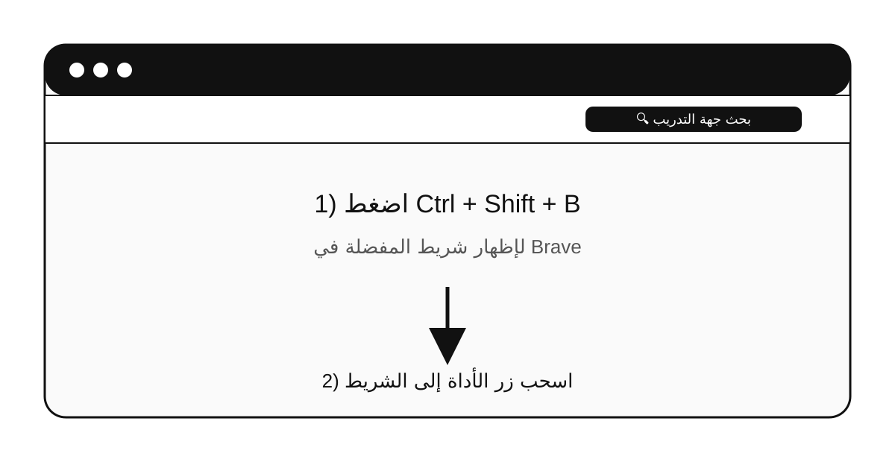
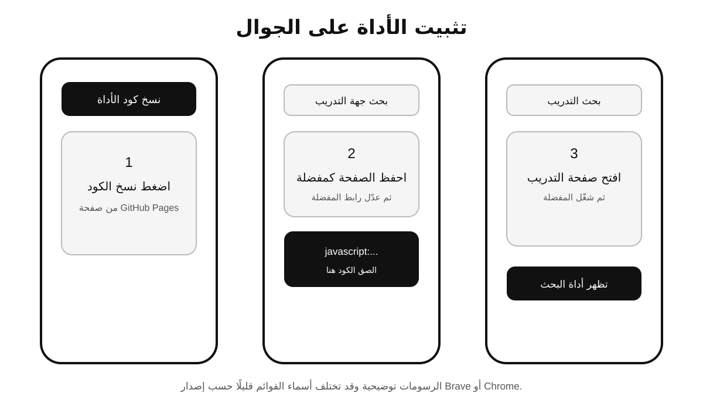
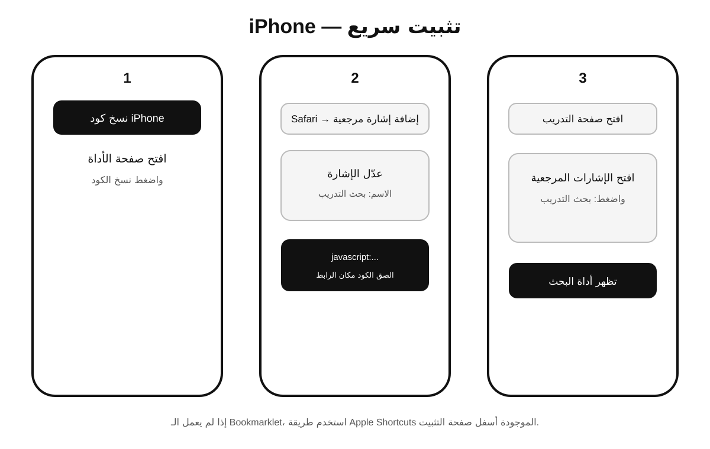
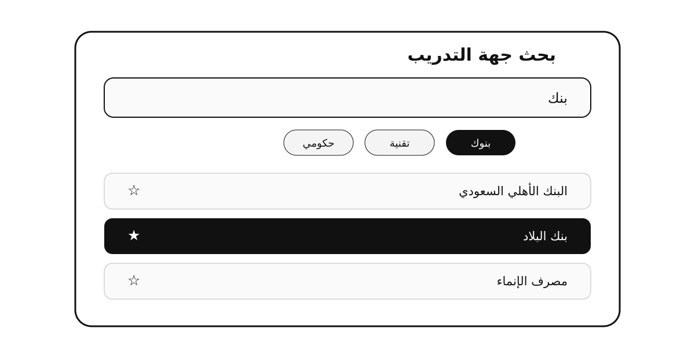

بحث جهة التدريب
الصفحة تحدد نوع الجهاز والمتصفح تلقائيًا، ثم تعرض طريقة التثبيت الأنسب.
تثبيت الكمبيوتر
أظهر شريط المفضلة
استخدم شريط المفضلة في متصفحك.
اسحب الزر
اسحب زر بحث جهة التدريب من أعلى الصفحة إلى شريط المفضلة.
شغّل الأداة
افتح صفحة التدريب واضغط المفضلة.

تثبيت الجوال
انسخ الكود
اضغط نسخ كود التثبيت.
أنشئ Bookmark
أنشئ مفضلة باسم بحث التدريب ثم استبدل الرابط بالكود.
شغّله
وأنت داخل صفحة الجامعة افتح المفضلة بحث التدريب.

تثبيت iPhone / iPad
انسخ الكود
اضغط نسخ كود iPhone.
احفظ Bookmark
احفظ الصفحة كإشارة مرجعية، ثم عدّل الرابط إلى الكود المنسوخ.
شغّله
افتح صفحة التدريب ثم افتح الإشارات المرجعية واختر بحث التدريب.

طريقة Apple Shortcuts الاحتياطية
1. أنشئ Shortcut
أضف الإجراء Run JavaScript on Webpage.
2. الصق الكود
انسخ كود Apple Shortcuts من أعلى الصفحة والصقه في الإجراء.
3. Share Sheet
فعّل Show in Share Sheet واجعله يستقبل صفحات Safari.
4. التشغيل
داخل صفحة الجامعة في Safari: مشاركة → اختر الاختصار.
الاستخدام بعد التثبيت
بحث مرن
اكتب بنك، وزارة، سدايا، مستشفى، أو جزءًا من اسم الجهة.
المفضلة والأخيرة
⭐ ثبت الجهات المهمة، والجهات المستخدمة مؤخرًا تظهر أولًا.
تصنيفات
بنوك، تقنية، حكومي، صحي، اتصالات.
خصوصية
سجل الاستخدام يبقى على جهاز الطالب فقط.
